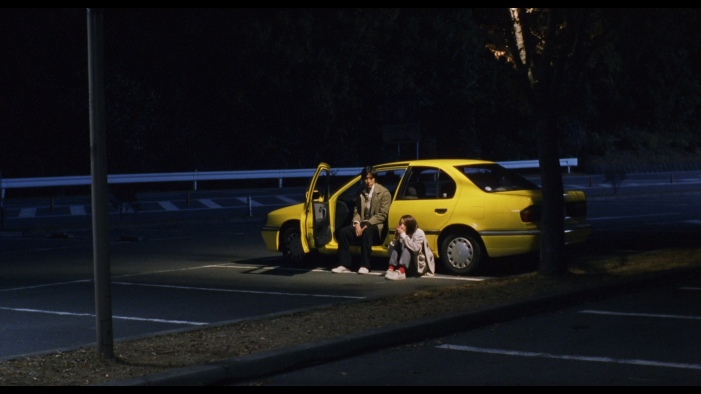
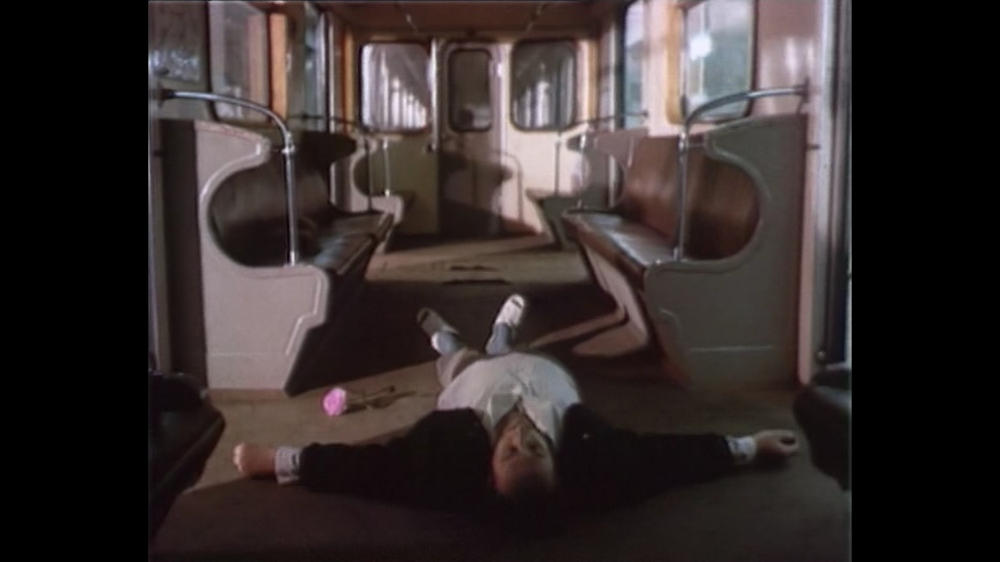
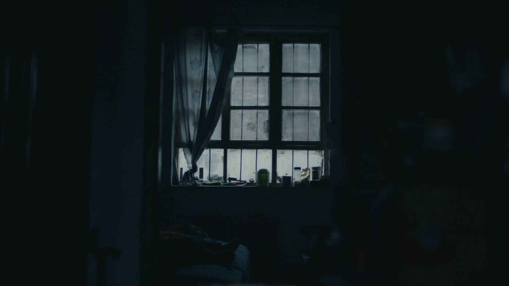
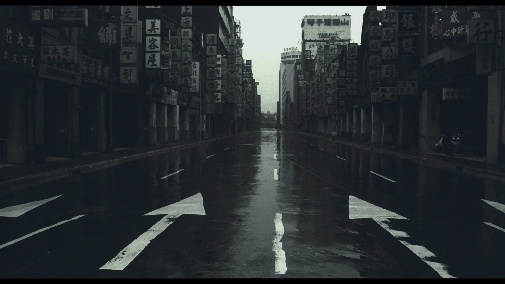
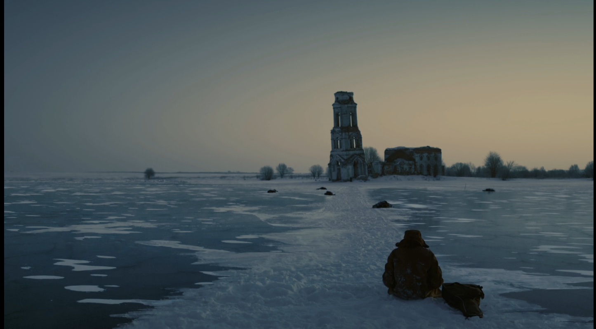
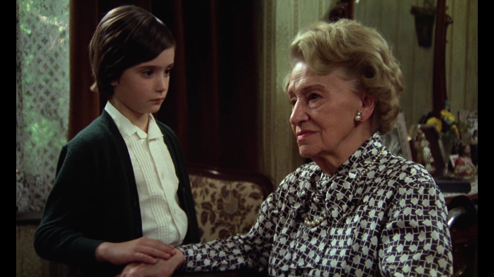

Other people's art
With the development of social media platforms and streaming services, my skills in navigating cool stuff online have deteriorated. Perhaps, you feel the same way. I believe, it happened because the culture of sharing and adoring art has been replaced by the habit of consuming the infinite fields of algorithmically generated feed. I want to reintroduce this culture, to the extent that I can, and for this reason I am going to collect here lesser-known sonic and visual artists that I really like and that have been an inspiration for me. This list is by no means exhaustive, and I am going to try to update it from time to time- Sayaka Botanic is a violinist and a one-person orchestra. She creates captivating thick sound textures out of her instrument and effect pedals
- Nikita Lisitsa is an indie game developer. He runs a blog where he talks about gamedev, graphics, and the relevant mathematics
- Cat Liu is a printmaker and a media designer. For the purposes of studying indigo dye making, Cat built a monitoring system for the indigo vat installed in Bioclub Tokyo, that can be sonified
- Artyom Markaryan (ITSU) is an electronic musician and Saori Ueda (ARS) is a visual artist. In their joint project they use systems of triggers and sidechains to create jagged rhythms and glitchy structures, synchronously sonic and visual
- Dana Ollestad is a multi-media artist. He uses light-sensitive pickups to allow us to listen to Flashes of Light We Can't See. The live performances can be very bright, so sunglasses are recommended
- Arpon Raksit, on top of being a mathematician, is a composer and a videographer. He records videos of places and solidifies their atmosphere in the form of a audiovisual poems
- Katya Zeynetdinova is a violinist, who happens to be a part of the coolest projects happening in Europe. Two examples are the chamber orchestra rendering of Aphex Twin and the instrumental rendering of O'Neill's play Long Day's Journey Into Night
Cinema
Here are some movies that I want to share

dir. Takeshi Kitano

dir. Kira Muratova

dir. Hu Bo

dir. Wan Ren

dir. Aleksey Balabanov

dir. Carlos Saura